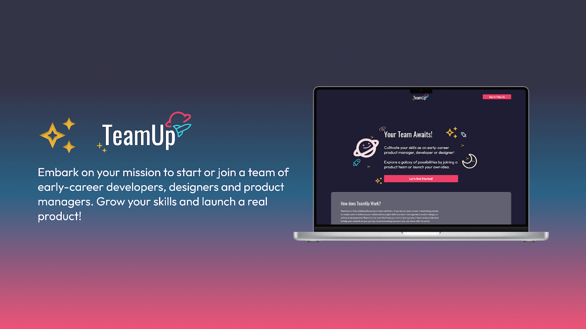
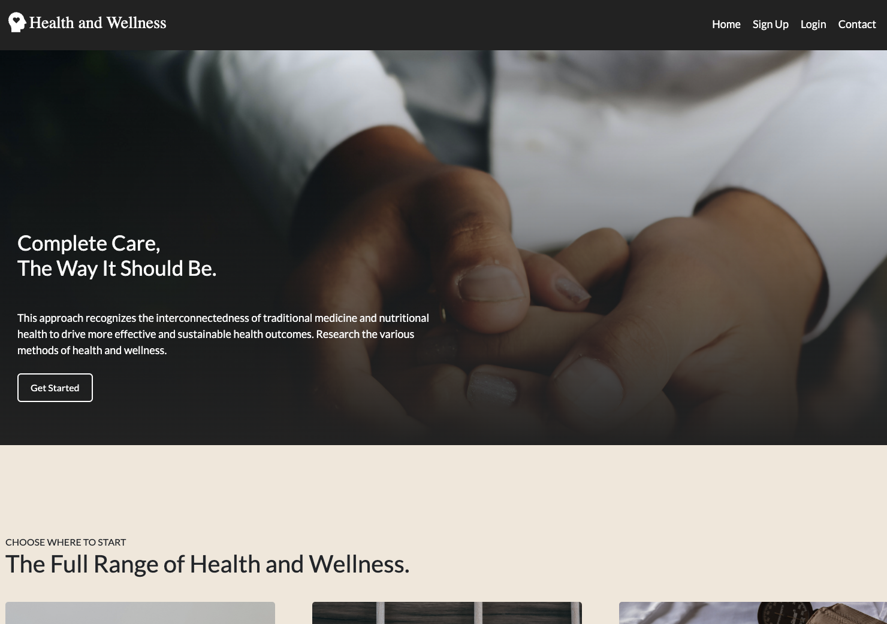

Intro

I am Yosef Wolday, and my professional journey from healthcare to becoming a full-stack engineer has been both unique and gratifying. Holding an M.B.A. in Health Administration and a B.S. in Health Science, my initial aspiration was to utilize my hands and skills to aid in healing the sick and caring for patients.
However, my path took an unexpected turn when I became part of a healthtech startup, exposing me to the realms of technology and artificial intelligence. This introduction opened my eyes to a new way of making a meaningful impact—using code to develop applications that enhance and transform lives. Drawing on my background as a Surgical Technician and Medical Assistant, I progressed from an Operations Supervisor to my current role as a Full-Stack Engineer.
In my current capacity, I now find immense satisfaction in using my hands to drive innovation that resonates in my unwavering commitment to contribute to the further of individuals’ lives.
TeamUp

TeamUp is a web-based collaboration platform specifically tailored for early-career tech professionals aiming to break into product management, development, and design. Addressing the industry's demand for cross-functional team experience, TeamUp provides a low-to-no-cost solution for individuals seeking opportunities to collaborate on personal projects and develop real Minimum Viable Products (MVPs).
Recognizing the limitations of traditional bootcamps in offering such experiences, the platform enables users to form teams, search for projects, or list their own, fostering a community where members can align based on interests, skills, and work preferences. By addressing pain points identified through user interviews and surveys, TeamUp strives to enhance job readiness, communication skills, and portfolio development for early-career professionals in the dynamic tech landscape.
Health and Wellness

The Health and Wellness project is a comprehensive platform engineered with React and Flask frameworks, offering a multi-page user portal designed to empower individuals in managing chronic illnesses beyond traditional medical approaches. The project facilitates an in-depth exploration of symptoms, enabling users to analyze their health conditions. Additionally, it provides a valuable resource for nutritional solutions, aiding users in understanding the impact of diet on their well-being. The platform goes a step further by assisting users in identifying local treating providers and specialists, creating a holistic approach to health management. Through intuitive design and seamless functionality, the Health and Wellness project aims to educate and empower patients, fostering a proactive and informed approach to tackling chronic illnesses.
Contact